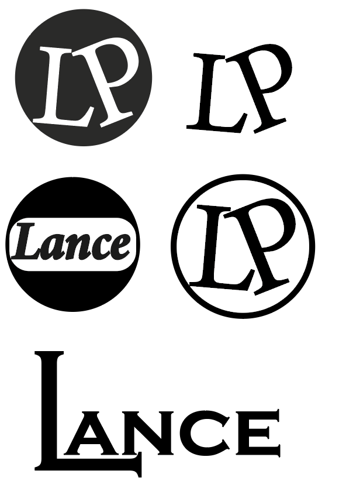
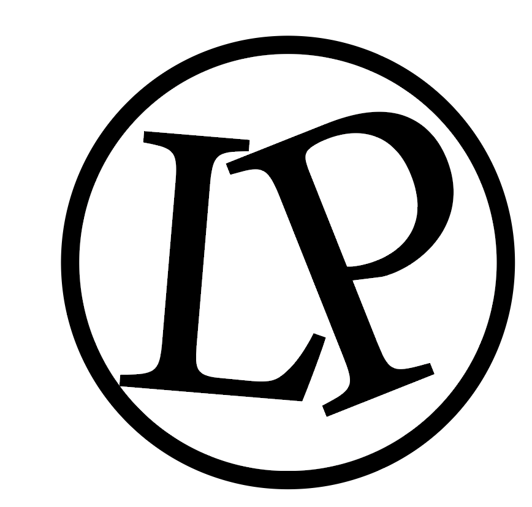

Wat heb ik gedaan?
Ik heb voor een artiest van de rockacedemie een paar logo's ontworpen in adobe illustrator.
In totaal heb ik 5 logo's gemaakt waarvan de artiest alleen de beste te zien krijgt. Om het logo eenvoudig te houden hebben we binnen de groep afgesproken om de logo's in het zwart-wit te houden.
De artiest gaf zelf al aan niet zijn volledige naam te willen gebruiken. Ik heb daarom logo's gemaakt met zijn voornaam "lance" of de zijn voorletters "LP".
Het uiteindelijke logo waar de voorkeur naar uitging binnen de groep om te laten zien is hieronder te zien op de afbeelding

Wat heb ik geleerd?
Ik heb met het maken van de logo's vooral kennis opgedaan bij het gebruiken van adobe illustrator want ik heb dat programma hiervoor nog niet gebruikt.
Ik heb hierbij veel gekeken naar welk lettertype bij de artiest past en waar ik de letters in het logo wil positioneren zodat het er mooi uit komt te zien
foto
Wat kon beter?
Ik had meer met verschillende vormen kunnen werken, want de meeste logo's zitten binnen een cirkel. Ik had daarnaast ook meer logo's kunnen maken om lance meer keus te bieden.
Ook was het goed geweest om een paar schetsen op papier te maken, want uit de hand getekende logo's zien er vaak toch anders uit dan via een computer gemaakte logo